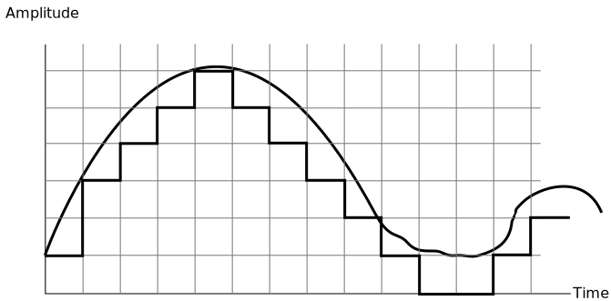
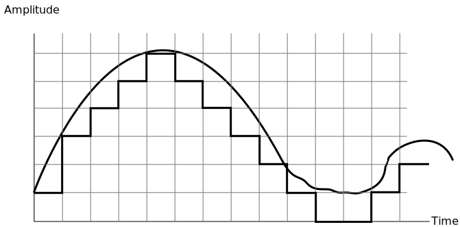

- The Physical Layer is the foundational layer in the OSI model of networking, responsible for transmitting data as electromagnetic signals across various transmission media.
- Understanding the core principles of data, signals, and functions within this layer is crucial for comprehending how information is moved within a network. Let's explore this in a structured manner:
Physical Layer
- The Physical Layer forms the basis for all higher-level network functions. It deals with the actual transmission of data over various mediums like copper cables, optical fibers, or wireless channels.
- To fully grasp the significance of data, signals, and the functions in this layer, consider the following:
Functions and Services of the Physical Layer
- Signal Encoding and Decoding: The physical layer is responsible for encoding digital data into analog signals for transmission and decoding received analog signals back into digital data.
- Transmission Medium Management: It manages the interaction between data and the transmission medium, ensuring that data is appropriately prepared for transmission over different types of media.
- Signal Multiplexing: The Physical Layer supports techniques like multiplexing, allowing multiple signals to share the same transmission medium without interference.
- Error Detection and Correction: Often, the physical layer includes error detection and correction mechanisms to ensure data integrity during transmission.
Data and Signals
- One of the major functions of the physical layer is to move data in the form of electromagnetic signals across a transmission medium.
- Whether you are collecting numerical statistics from another computer, sending animated pictures from a design workstation, or causing a bell to ring at a distant control center, you are working with the transmission of data across network connections.
- Generally, the data usable to a person or application are not in a form that can be transmitted over a network. For example, a photograph must first be changed to a form that transmission media can accept.
- Transmission media work by conducting energy along a physical path.
- To be transmitted, data must be transformed into electromagnetic signals.
Signals and Their Characteristics
- Signals in the context of the physical layer are representations of data in the form of electromagnetic waves.
- These signals can vary in characteristics, including amplitude, frequency, and phase, depending on the modulation technique used.
- Understanding signal characteristics is essential for efficient data transmission and reception, as different types of signals are suited for different transmission mediums and distances.
Digital and Analog
- In the world of data and signals, there are two fundamental categories that we encounter: analog and digital.
- These terms define how information is represented and transmitted, whether it's the data itself or the signals that carry it.
- Understanding the distinction between analog and digital is crucial in the field of information technology and telecommunications.
Analog and Digital Data
- Data, the raw information we work with, can be categorized as either analog or digital. The key distinction lies in the nature of the information's presentation.
Analog Data
- Analog data is characterized by its continuity; it represents information as a continuous flow.
- Consider an analog clock with hour, minute, and second hands. The movement of these hands provides information in a continuous form, where time progresses smoothly.
- Similarly, analog data can be found in the sounds produced by a human voice. When someone speaks, an analog wave is created in the air, representing continuous values.
- This analog data can be captured by a microphone and converted into either an analog or digital signal.
Digital Data
- In contrast, digital data is discrete in nature, representing information through distinct and separate states.
- Think of digital data as the numbers 0 and 1. These binary digits (bits) are the building blocks of digital information.
- Computers, for example, store and manipulate data using combinations of 0s and 1s.
- The transition from 8:05 to 8:06 on a digital clock perfectly illustrates the discrete nature of digital data.
Analog and Digital Signals
- Just as data can be analog or digital, the signals used to transmit this data can also be categorized into analog and digital.
Analog Signals
- Analog signals exhibit a continuous range of intensity levels over time.
- When an analog signal moves from one value to another, it traverses an infinite number of values along its path.
- This continuous variation allows analog signals to convey a wide range of information.
- For example, the natural voice we hear is transmitted as an analog signal, providing a nuanced representation of sound.
Digital Signals
- In contrast, digital signals are characterized by having only a limited number of defined values.
- Although each value can theoretically be any number, it is often simplified to binary values: 1 and 0.
- When represented graphically, a digital signal appears as a series of discrete steps or abrupt transitions from one value to another.
Periodic Analog Signals
- Periodic analog signals can be classified as simple or composite. A simple periodic analog signal, a sine wave, cannot be decomposed into simpler signals. A composite periodic analog signal is composed of multiple sine waves.
Sine wave
- The sine wave is the most fundamental form of a periodic analog signal. When we visualize it as a simiple osciallting curve, its change over the course of a cycle is smooth and consistent, a continuous, rolling flow.
- Each cycle consists of a single arc above the time axis followed by a single arc below it.

- A sine wave, a fundamental concept in waveforms and signal processing, can be
comprehensively
characterized by three crucial parameters: the peak amplitude, the frequency, and the phase.
Together, these three parameters provide a complete and precise description of the behavior
and
characteristics of a sine wave.
- Peak Amplitude: The peak amplitude of a sine wave represents the maximum value that the wave reaches in its oscillation. It essentially measures the wave's intensity or strength. In a graphical representation of a sine wave, it corresponds to the distance from the central axis (baseline) to the highest point the wave reaches in the positive direction and likewise for the lowest point in the negative direction. The peak amplitude defines the wave's scale and determines the magnitude of its effect in various applications.
- Frequency: Frequency is a vital parameter that describes the number of oscillations or cycles that a sine wave completes in a given unit of time. It is usually measured in hertz (Hz), which represents cycles per second. In essence, frequency indicates how rapidly the wave repeats itself. High-frequency sine waves oscillate rapidly, while low-frequency sine waves oscillate more slowly. This parameter plays a significant role in applications such as audio signals, radio waves, and numerous other fields where the timing or periodicity of the wave is crucial.
- Phase: The phase of a sine wave refers to its position in time relative to a reference point, often the beginning of a waveform cycle. It tells us where the wave is in its periodic motion at any given moment. Phase is typically expressed in degrees or radians and ranges from 0° to 360°. By adjusting the phase, we can shift the wave's starting point within its cycle, which is a fundamental concept in signal processing and synchronization. Phase information is especially crucial in fields like telecommunications, where the alignment of signals is essential for proper communication.
Wavelength
- Definition: Wavelength is a fundamental characteristic of a signal as it travels through a transmission medium. It plays a pivotal role in understanding the behavior of waves in various fields of science and technology.
- Relationship with Frequency and Speed: Wavelength is intrinsically linked
to
two other critical parameters: frequency and propagation speed. To truly grasp the
significance
of wavelength, it's essential to comprehend its relationship with these factors.
- Frequency: Frequency represents the number of complete cycles or oscillations a wave undergoes per unit of time. It is usually measured in hertz (Hz). In a simple sine wave, the frequency corresponds to how rapidly the wave oscillates. Wavelength and frequency are inversely proportional: as frequency increases, wavelength decreases, and vice versa. This relationship is described by the equation: Speed (v) = Frequency (f) × Wavelength (λ) This equation highlights that the product of frequency and wavelength is equal to the speed of the wave in the given medium. Therefore, as frequency increases, wavelength must decrease to maintain a constant wave speed.
- Propagation Speed: The speed at which a wave travels through a medium is a crucial factor in wave behavior. Different materials or mediums can support waves at varying speeds. Wavelength, when multiplied by the frequency, determines the speed of the wave. This speed is significant in various applications, such as telecommunications, where it affects signal latency and quality.
- Practical Significance: Wavelength is not just a theoretical concept; it
has
practical implications across multiple domains.
- In wireless communications, understanding the wavelength of radio waves is essential for designing efficient antennas and determining signal coverage areas.
- In optics, the wavelength of light determines its color and properties, playing a crucial role in the design of optical devices like lenses and prisms.
- In acoustics, sound waves with different wavelengths create distinct audible frequencies, impacting the quality of sound in audio systems.
Bandwidth
- Definition: Bandwidth is a critical concept in signal processing and telecommunications. It refers to the range of frequencies within a signal or a communication channel that can effectively carry information. Bandwidth is often expressed in hertz (Hz) and represents the span of frequencies from the lowest to the highest that a system or channel can accommodate.
- Relationship with Data Rate: The relationship between bandwidth and data rate is fundamental. Bandwidth is directly linked to the rate at which information can be transmitted through a channel. A wider bandwidth allows for a higher data rate, enabling the transmission of more information in a given time frame. This relationship is governed by the Nyquist-Shannon sampling theorem, which states that the maximum data rate (R) achievable in a channel is directly proportional to its bandwidth (B):
Digital Signals
- Introduction:
- Information can be conveyed through digital signals in addition to analog signals.
- Digital signals employ discrete values to represent data.
- Basic binary encoding associates '1' with a positive voltage and '0' with zero voltage.
- Binary Representation:
- Digital signals are based on binary encoding using '1' and '0'.
- This binary scheme serves as the foundation for most digital systems and communication protocols.
- Expanding Data Capacity:
- Digital signals can incorporate more than two voltage levels.
- This allows for the transmission of multiple bits of information simultaneously.
- Signals with multiple levels can transmit more data per unit of time compared to binary signals.
- Figure below illustrates two signals—one with two voltage levels and another with four. The signal with four levels can transmit more data per unit of time compared to the binary signal.

- Versatility in Representation:
- Digital signals are versatile in representing various types of data, including text, numbers, and multimedia content.
- Different voltage levels or combinations thereof can represent unique pieces of information.
Bit rate
- Definition: In the context of digital signals, it's essential to use appropriate characteristics for description. Unlike periodic analog signals, most digital signals are nonperiodic, making traditional terms like "period" and "frequency" unsuitable. Instead, we use the term "bit rate" to describe digital signals.
- Bit Rate Defined: The bit rate is a crucial metric used in digital signal processing. It quantifies the speed or rate at which digital data is transmitted through a channel. It is typically expressed in bits per second (bps), indicating the number of bits sent in one second.
Transmission Media
- Transmission media, also known as the communication pathway or medium, serves as the conduit for transmitting information from a sender to a receiver. Typically, this information is conveyed through the use of electrical or electromagnetic signals.
- An electrical signal takes the form of an electric current, while an electromagnetic signal consists of a sequence of electromagnetic energy pulses at various frequencies.
Types of Transmission Media ↓
Guided Media
- Guided media represent physical mediums that incorporate conducting materials such as metal or glass to facilitate the transmission of data or signals.
- This category includes various types of cables and wires, each possessing its unique characteristics, including transmission speed, susceptibility to noise, physical appearance, and cost.
- Guided media is also commonly referred to as wired media and encompasses elements like copper wires, twisted pairs, coaxial cables, and optical fibers.
Unguided Media
- Unguided media, in contrast, do not rely on physical conductors or metals to transport signals. Instead, they transmit electromagnetic signals through the air.
- These signals are accessible to anyone equipped with a suitable receiving device, a mode of transmission often referred to as wireless communication.
- Various types of waves, including radio waves, microwaves, and infrared waves, are utilized in this form of transmission.
Transmission Media Capability Factors
When designing a communication system, it's essential to consider various factors that affect the effectiveness and reliability of data transmission. These factors collectively determine the capabilities of the transmission medium employed. Understanding these key factors helps engineers and network planners make informed decisions. Below are some critical capability factors that play a pivotal role in shaping the performance of transmission media:
- Bandwidth: Bandwidth refers to the data-carrying capacity of a channel or medium. Higher bandwidth communication channels can support higher data rates, allowing for the transmission of more information in a given period.
- Radiation: Radiation pertains to the unintended leakage of signals from the medium, typically caused by undesirable electrical characteristics of the medium itself. This phenomenon can result in interference and signal loss.
- Noise Absorption: Noise absorption is a measure of the medium's susceptibility to external electrical noise. When a transmission medium is susceptible, it can pick up unwanted electrical signals from the environment, leading to signal distortion. Noise absorption is a critical factor in ensuring data integrity during transmission.
- Attenuation: Attenuation refers to the reduction in signal strength as it propagates through the medium. The amount of energy lost depends on various factors, including the frequency of the radiation and the physical characteristics of the medium. High-frequency signals are more susceptible to attenuation. This phenomenon limits the usable distance that data can travel through the medium and must be considered when designing communication systems.
Twisted Pair Cable
- A twisted pair cable consists of two copper wires, each approximately 1mm thick.
- These two wires are individually insulated with materials such as polyethylene, polyvinyl chloride, fluoropolymer resin, or Teflon (r) and are twisted together in a helical form.
- In a twisted pair cable, one wire carries the signal, while the other wire is used for ground reference. The receiver at the other end of the cable uses the difference between the two signals to interpret the transmitted data.
- The primary purpose of twisting the wires together is to reduce electrical interference from other similar wire pairs in the surrounding environment. This interference reduction is crucial for maintaining signal integrity.
- The performance of a twisted pair cable improves with an increase in the number of twists per foot, as this further reduces the susceptibility to external interference.
- One important property of twisted pair cables is their gauge, which refers to the thickness or diameter of the conductors. The gauge affects the cable's electrical characteristics and performance.
- The effective bandwidth of a twisted pair cable depends on several factors, including the conductor's gauge, the length of the circuit, and the spacing of amplifiers (repeaters) along the transmission path. These factors collectively determine the cable's ability to carry signals at different frequencies.
- Twisted pair cables can be used for transmitting both analog and digital signals. Their frequency range typically spans from 100 Hz to 5 MHz, making them suitable for various communication applications.
- One of the most common applications of twisted pair cables is in telephone systems, where they have been widely used for voice communication and, more recently, for broadband internet access.
Twisted Pair Cables come in two primary types:
- Unshielded Twisted Pair (UTP): UTP cables are the most common and widely used type of twisted pair cables.
- Advantages:
- Cost-Effective: UTP cables are generally more affordable than STP cables, making them a budget-friendly choice for many applications.
- Flexibility: They are flexible and easy to work with, making installation and maintenance straightforward.
- Common Usage: UTP cables are widely used for Ethernet networking, telephone lines, and various data transmission needs.
- Decent Interference Resistance: UTP cables provide reasonable resistance to external interference in typical environments.
- Disadvantages:
- Limited EMI Protection: UTP cables offer limited protection against electromagnetic interference (EMI) and may not be suitable for environments with high levels of interference.
- Distance Limitations: They have distance limitations for data transmission, especially at higher data rates.
- Shielded Twisted Pair (STP): STP cables incorporate an extra layer of shielding, typically made of metal or foil, in addition to the twisted pairs.
- Advantages:
- Enhanced EMI Protection: STP cables offer superior protection against electromagnetic interference, making them suitable for environments with high interference levels.
- High Data Rates: They can support higher data rates and longer transmission distances compared to UTP cables.
- Reduced Crosstalk: STP cables reduce crosstalk (signal interference between adjacent pairs) more effectively than UTP cables.
- Reliability: STP cables are often chosen for critical applications where signal integrity is paramount.
- Disadvantages:
- Cost: STP cables are typically more expensive than UTP cables due to the added shielding material.
- Rigidity: The additional shielding makes STP cables thicker and less flexible, which can make installation and maintenance more challenging.
- Grounding: Proper grounding of the shielding is essential for optimal performance, and improper grounding can lead to issues.
Advantages and Disadvantages of Twisted Pair Cable
Advantages:
- Versatility: Twisted pair cables can carry both analog and digital data, making them suitable for a wide range of applications, including telephone lines, Ethernet networks, and more.
- Ease of Implementation: Implementing and terminating twisted pair cables is relatively straightforward, even for those with limited technical expertise. This ease of use contributes to their widespread adoption.
- Cost-Effectiveness: Twisted pair cables are the most cost-effective medium for short-distance data transmission. They are readily available and budget-friendly.
Disadvantages:
- Poor Noise Immunity: Twisted pair cables offer limited noise immunity, making them susceptible to external interference. This susceptibility can result in signal distortion and reduced data integrity.
- High Attenuation: Twisted pair cables exhibit relatively high attenuation, meaning that the signal strength diminishes as it travels over long distances. This can limit the maximum distance data can be reliably transmitted without the use of repeaters or amplifiers.
- Limited Bandwidth: Twisted pair cables support lower bandwidth compared to other transmission media. For example, they typically support speeds of up to 10 Mbps for distances of up to 100 meters in 10BASE-T Ethernet networks.
- Poor Security: Twisted pair cables offer minimal security against eavesdropping and tapping. They can be relatively easy to intercept, making them less suitable for applications that require high levels of data security.
- Fragility: Due to their relatively thin size, twisted pair cables are susceptible to physical damage and breakage if not handled carefully. This fragility can lead to signal interruptions and maintenance challenges.
Digital Transmission
- A computer network is designed to send information from one point to another. This information needs to be converted to either a digital signal or an analog signal for transmission.
Modulation
- Modulation is a fundamental process in digital communication, involving the alteration of a signal's frequency to encode and carry data. In simpler terms, modulation is the transformation of a digital signal into an analog signal.
- The complementary process of converting an analog signal back into a digital signal is known as demodulation. The combined term MODEM is derived from "modulation" and "demodulation" and is commonly used to refer to devices that perform both functions.
- When transmitting a signal from one computer to another over an analog channel, such as a telephone line, signal conversion becomes necessary to ensure compatibility between digital data and analog transmission media.
- Since computers generate digital signals, and telephone lines carry analog signals, modulation is typically performed at the sending end to convert the digital data into a format suitable for analog transmission.
- At the receiving end, the analog signal being carried by the telephone line must be converted back into a digital signal through demodulation to retrieve the original digital data.
Why Modulation is Necessary?
- Conversion between digital and analog signals is essential due to several reasons:
- The data on the receiving side is in digital form and cannot be directly transmitted in its digital state through analog transmission media. Hence, it must be converted into an analog signal for effective transmission.
- Many transmission media, such as telephone lines, are inherently analog in nature. Therefore, data must be transformed into an analog signal via modulation for compatibility with these transmission channels.
Applications of Modulation
- Modulation is a critical process used when a signal requires transformation from one form to another. It finds applications in various types of signal transformations:
- Digital to digital conversion: In this scenario, modulation is used to encode digital data for more efficient transmission within digital networks.
- Analog to digital conversion: Modulation techniques are employed to convert analog signals into a digital format, making them compatible with digital networks.
- Digital to analog conversion: When interfacing with analog transmission media, modulation is necessary to convert digital data into analog signals for transmission.
- Analog to analog conversion: In certain specialized situations, the preservation of analog signals during transmission is vital, and modulation techniques are utilized for this purpose.
Digital To Digital Conversion
Data of information can be stored in 2 ways Analog and Digital
- To transmit data digitally, it needs to be first converted to digital form.
- Digital to digital encoding or conversion means convert digital data into digital signal
- This convertion can be done in 2 ways:
- Line coding (Digital to Digital is refered to as Line Coding)
- Block coding
Line coding
- The process of converting digital data into digital signal is said to be line coding.
- Dgital data - found in binary format (1010100)
- Digital signal - is denoted by discrete signal.
- Receiver: This is the starting point of the process. It represents the source of digital data, which, in your example, is the sequence "10101." This data is the information you want to transmit from one point to another.
- Encoder: The digital data from the receiver is then passed through an encoder. The encoder's role is to convert the digital data into a specific digital signal format suitable for transmission over a communication channel. In line coding, this encoding process involves mapping binary data (like "10101") to a specific pattern of signal levels.
- Digital Signals Formation: After encoding, the data has been transformed into a digital signal. In your diagram, this would be the sequence of signal levels that correspond to the encoded data. The digital signal is typically a series of voltage levels or signal transitions that represent the binary data.
- Decoder: The encoded digital signal is transmitted through a communication channel, and at the receiving end, it goes through a decoder. The decoder's role is to reverse the encoding process, converting the received digital signal back into its original digital data format.
- Digital Data at Receiver: At the end of this process, you have the original digital data, which should ideally match the data sent from the sender (the "10101" in your example).
Types of Line Coding
Unipolar Encoding
- Unipolar encoding employs a single voltage level to represent binary data:
- 1 - High voltage is transmitted, typically represented as a positive voltage.
- 0 - No voltage is transmitted; this state is often indicated by zero voltage.
Polar Encoding
- Polar encoding utilizes multiple voltage levels to represent binary values.
- It is available in four main types:
- Polar Non-Return to Zero (NRZ)
- Return to Zero (RZ)
- Manchester
- Differential Manchester
- NRZ: NRZ encoding uses two different voltage levels to represent binary
values:
- NRZ-L (Level Signals): In this variant, a continuous voltage level is maintained throughout a bit period to represent '1', and the absence of voltage represents '0'.
- NRZ-I (Inverted Signals): In NRZ-I, the voltage level changes whenever a '1' is encountered, and it remains constant for '0'.
- RZ (Return to Zero): RZ is employed to address the synchronization issue
found in NRZ encoding. RZ uses three voltage levels:
- +ve voltage → Represents '1'
- -ve voltage → Represents '0'
- Zero voltage → Represents neither '0' nor '1'
- Manchester: Manchester encoding combines elements of RZ and NRZ-L. The bit time, which is the time taken to transmit one bit, is divided into two halves. A transition occurs in the middle of each bit, and the phase changes to represent different binary values.
- Differential Manchester: This encoding scheme also combines aspects of RZ and NRZ-I. It transitions at the middle of each bit but changes phase only when a '1' is encountered. This ensures clock synchronization and provides a reliable means of data transmission.
Bipolar Encoding
- Bipolar encoding is a line coding technique commonly used in digital communication systems.
- It distinguishes between binary '0' and binary '1' by utilizing three voltage levels:
- Positive voltage (+ve) represents binary '1.'
- Negative voltage (-ve) represents binary '1.'
- Zero voltage represents binary '0.'
- Binary '1' is represented by alternating between positive (+ve) and negative (-ve) voltages within the signal.
- This encoding scheme is characterized by its use of zero voltage to indicate binary '0,' making it more resistant to baseline wander (a common issue in long-distance data transmission).
- The use of both positive and negative voltages to represent binary '1' allows for a balance between the number of positive and negative pulses, helping to maintain the overall DC balance in the signal.
- Bipolar encoding is commonly used in applications where clock synchronization is essential, as it provides a reliable means of distinguishing between '0' and '1' even in the absence of constant transitions.
Analog to Digital Conversion
- The process of converting analog signal to digital signal is also known as digitizing.
- In analog to digital conversion, information is converted from continuous waveform to a
series of bits (0 and 1).
- The various techniques used to perform analog to digital conversion are shown below.
PAM: Pulse Amplitude Modulation
- Pulse Amplitude Modulation (PAM) is a modulation technique used in
digital communication that begins with an analog signal and samples it at a very high
speed. Its input is analog signal and output is digital signal.
- Sampling in PAM involves measuring the amplitude of the analog signal at equal
intervals. The accuracy of the sampling process depends on the interval chosen; smaller
intervals result in higher accuracy. The sampling interval should ideally be at least
twice the frequency of the data signal. For example, if the data signal operates at 500
MHz, then the sampling rate should be 1000 samples per second, meaning the amplitude of
the signal is measured 1000 times per second.
- Following the sampling process, PAM generates a series of pulses based on the results of
the sampling. These pulses represent discrete values of the original analog signal.
- It's important to note that PAM does not provide a full-fledged method for converting
analog signals to digital signals; instead, it generates a pulse signal. While it may
not be a complete digital conversion method, PAM plays a crucial role in various
engineering applications. Furthermore, it serves as the initial step in Pulse Code
Modulation (PCM), making it an essential concept in the broader context of
analog-to-digital conversion.
PCM: Pulse Code Modulation
- Pulse Code Modulation (PCM) is a widely used method in digital
communication for the precise representation and transmission of analog signals. It
involves a series of three essential processes, as depicted in the figure below:
- Sampling: PCM starts with the sampling process, much like Pulse
Amplitude Modulation (PAM). During this phase, the continuous analog signal is
discretized by measuring its amplitude at regular intervals. This step transforms the
analog signal into a series of discrete samples.
- Quantization: Following the sampling stage, PCM quantizes the sampled
values by assigning integral values to each sample. This quantization process
effectively reduces the infinite number of possible signal amplitudes to a finite set of
discrete levels. The number of quantization levels determines the precision of the
digital representation; more levels provide higher fidelity but require more bits for
encoding.
- Encoding: In the final stage, the quantized values are encoded into a
digital format represented as a stream of binary bits. Each quantization level is
assigned a unique binary code, allowing the digital representation to accurately capture
the original analog signal's amplitude variations.
DM: Delta Modulation
Delta Modulation (DM) is a digital modulation technique developed to simplify the complexity
of Pulse Code Modulation (PCM).
While PCM determines the amplitude of a signal for each sample, DM focuses on detecting and
encoding only the changes in amplitude from one sample to the next.
In Delta Modulation, instead of generating codewords, individual bits are transmitted
sequentially, one after the other, to represent the signal.
The Delta Modulation process is illustrated in the figure below:

PAM: Pulse Amplitude Modulation
- Pulse Amplitude Modulation (PAM) is a modulation technique used in digital communication that begins with an analog signal and samples it at a very high speed. Its input is analog signal and output is digital signal.
- Sampling in PAM involves measuring the amplitude of the analog signal at equal intervals. The accuracy of the sampling process depends on the interval chosen; smaller intervals result in higher accuracy. The sampling interval should ideally be at least twice the frequency of the data signal. For example, if the data signal operates at 500 MHz, then the sampling rate should be 1000 samples per second, meaning the amplitude of the signal is measured 1000 times per second.
- Following the sampling process, PAM generates a series of pulses based on the results of the sampling. These pulses represent discrete values of the original analog signal.
- It's important to note that PAM does not provide a full-fledged method for converting analog signals to digital signals; instead, it generates a pulse signal. While it may not be a complete digital conversion method, PAM plays a crucial role in various engineering applications. Furthermore, it serves as the initial step in Pulse Code Modulation (PCM), making it an essential concept in the broader context of analog-to-digital conversion.
PCM: Pulse Code Modulation
- Pulse Code Modulation (PCM) is a widely used method in digital communication for the precise representation and transmission of analog signals. It involves a series of three essential processes, as depicted in the figure below:
- Sampling: PCM starts with the sampling process, much like Pulse Amplitude Modulation (PAM). During this phase, the continuous analog signal is discretized by measuring its amplitude at regular intervals. This step transforms the analog signal into a series of discrete samples.
- Quantization: Following the sampling stage, PCM quantizes the sampled values by assigning integral values to each sample. This quantization process effectively reduces the infinite number of possible signal amplitudes to a finite set of discrete levels. The number of quantization levels determines the precision of the digital representation; more levels provide higher fidelity but require more bits for encoding.
- Encoding: In the final stage, the quantized values are encoded into a digital format represented as a stream of binary bits. Each quantization level is assigned a unique binary code, allowing the digital representation to accurately capture the original analog signal's amplitude variations.
DM: Delta Modulation
Delta Modulation (DM) is a digital modulation technique developed to simplify the complexity of Pulse Code Modulation (PCM).
While PCM determines the amplitude of a signal for each sample, DM focuses on detecting and encoding only the changes in amplitude from one sample to the next.
In Delta Modulation, instead of generating codewords, individual bits are transmitted sequentially, one after the other, to represent the signal.
The Delta Modulation process is illustrated in the figure below:
